Cada tema termina con preguntas como las del examen: test, simulaciones y retos.
| Lunes a viernes | 9:00 a 14:00 y 16:30 a 20:30 |
| Sábados | 10:00 a 13:30 |
| Domingos y festivos | Cerrado |
En julio y agosto, solo de mañana.
1. m. Noticia falsa propalada con algún fin.
Patrocinado
Zapatillas running Vuelo 3
59,99 €
Deportes Meseta
Zapatillas pádel Smash
74,95 €
ZapaRun
Zapatillas trail Sierra
89,00 €
Atleta Total
Zapatillas casual Paseo
39,99 €
Calzados Duero
Zapatillas gimnasio Flex
45,50 €
Deportes Meseta
Patrocinado
Envío gratis en 24 horas. Devolución fácil. Las mejores marcas de running y pádel.
Patrocinado
Más de 500 modelos. Compra hoy y recíbelo mañana.
Qué mirar antes de comprar: el deporte que haces, tu tipo de pisada, la talla y el precio.
Hemos probado diez modelos baratos para quien empieza a correr.
Tema 1
Navega, busca, comprueba lo que lees y guarda lo que encuentras.
←→ para moverte · B buscar · P pantalla completa
Basado en el curso «Soy competente digital», de CyL Digital (Junta de Castilla y León), y en la demo del examen de tuCertiCyL. Material no oficial. Licencia CC BY-NC-SA 4.0.
Tema 1
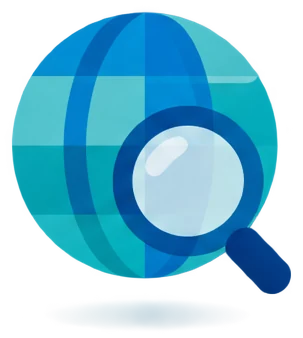
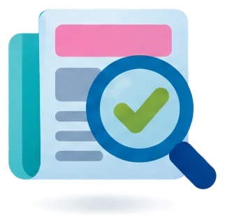
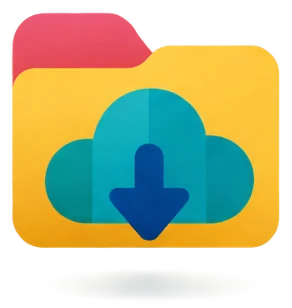
Tema 1
Abrir webs con su dirección, distinguir navegador y buscador, y buscar en Google, en buscadores especializados, en Wikipedia y en el diccionario.
Saber si una información es fiable, reconocer un bulo y distinguir los anuncios de los resultados normales.
Guardar archivos y copias de seguridad, usar marcadores e historial, descargar, descomprimir, imprimir y pasar las fotos del móvil.
9
preguntas de esta área en el examen: 3 por competencia (2 de conocimientos y 1 de habilidades). La ficha oficial pide acertar al menos la mitad: 5 de 9. En este curso entrenas para acertar 7 de 9 (más del 75 %).
1.1
En el examen: 3 preguntas. En la demo: qué programas son navegadores (test con imágenes).
1.1 · Navegación y búsqueda
Internet es una buena fuente de información: webs oficiales, prensa, enciclopedias, diccionarios y vídeos.
| Qué quieres hacer | Cómo |
|---|---|
| Abrir un enlace | Clic cuando el puntero es una mano |
| Abrir un enlace en otra pestaña | Ctrl+clic o clic con la rueda del ratón |
| Volver a la página anterior | Flecha ← o Alt+← |
| Ir a la página siguiente | Flecha → o Alt+→ |
| Recargar la página | Flecha circular ⟳ o F5 |
| Qué quieres hacer | Cómo |
|---|---|
| Abrir una pestaña nueva | Botón + o Ctrl+T |
| Cerrar una pestaña | La ✕ de la pestaña o Ctrl+W |
| Recuperar la última pestaña cerrada | Ctrl+Mayús+T |
| Buscar una palabra en la página | Ctrl+F |
1.1 · Navegación y búsqueda
1.1 · Navegación y búsqueda
Un navegador web es un programa para abrir y ver páginas web. Se instala en el ordenador o en el móvil.
Mantenlo siempre actualizado. Puedes tener varios navegadores instalados a la vez.
Es de Google.
Es de Microsoft. Viene con Windows 11.
Es de la Fundación Mozilla. Es software libre.
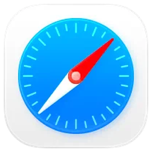
Es de Apple. Está en el iPhone, el iPad y el Mac.
Otros: Brave y Opera. La demo usa el logo antiguo de Edge (una «e» azul). Hoy es una ola azul y verde.
1.1 · Navegación y búsqueda
La URL es la dirección de una página web. Se escribe en la barra de direcciones, arriba del todo del navegador. Después pulsas Intro.
La conexión va cifrada. No quiere decir que la web sea de fiar.
Es el nombre del sitio. Este termina en la extensión .es.
Es la página concreta dentro del sitio.
Normalmente no hace falta escribir https:// ni www. Chrome no los muestra hasta que haces clic en la barra.
1.1 · Navegación y búsqueda
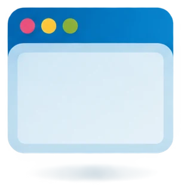
Un navegador es un programa que se instala. Sin navegador no puedes abrir páginas web.
Ejemplos: Chrome, Edge, Firefox y Safari.
Un buscador (o motor de búsqueda) es una página web que encuentra información con las palabras que escribes. No se instala: se abre dentro del navegador.
Ejemplos: Google, Bing y Yahoo!
1.1 · Navegación y búsqueda
Un buscador generalista busca información de cualquier tema.
| Buscador | Dirección | Qué tiene de especial |
|---|---|---|
| google.es | Es el más usado: casi 9 de cada 10 búsquedas en el mundo. | |
| Bing | bing.com | Es de Microsoft. Es el buscador que trae Edge. |
| Yahoo! | es.search.yahoo.com | El examen lo nombra. Hoy se usa poco. |
| DuckDuckGo | duckduckgo.com | No guarda tus búsquedas. |
| Ecosia | ecosia.org | Dedica sus beneficios a plantar árboles. |
1.1 · Práctica (no cuenta para el Comprueba)
1.1 · Navegación y búsqueda
Unos programas llamados arañas (o bots) recorren la web. Saltan de enlace en enlace.
Guardan lo que encuentran en su índice: su propia lista de páginas.
Cuando buscas, un algoritmo ordena las páginas del índice. Un algoritmo es un conjunto de reglas de cálculo.
Google usa más de 200 factores para ordenar: las palabras clave, el contenido, los enlaces que recibe la página, la velocidad y el comportamiento de las visitas.
1.1 · Navegación y búsqueda
Cada buscador tiene su propio índice y su propio algoritmo. Por eso Google y Bing no dan los mismos resultados ni en el mismo orden.
Además, el buscador personaliza los resultados. Para eso usa:
1.1 · Navegación y búsqueda
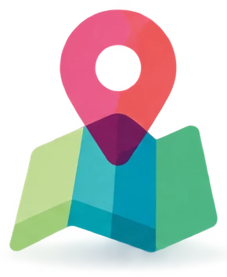
Tú buscas «pizzería» en Google desde Valladolid. Tu primo busca lo mismo, a la vez, desde León. ¿Os salen los mismos resultados?
No. Google usa tu ubicación y te enseña pizzerías cercanas.
También cuentan tu historial y el idioma.
Si uno de los dos usa Bing, el orden cambia todavía más, porque Bing tiene otro índice.
1.1 · Navegación y búsqueda
Un buscador vertical (o temático) busca solo sobre un tema. Busca en menos páginas, pero sus resultados son más útiles para ese tema.
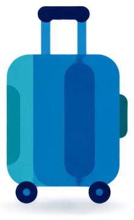
Booking (hoteles) y Skyscanner (vuelos).
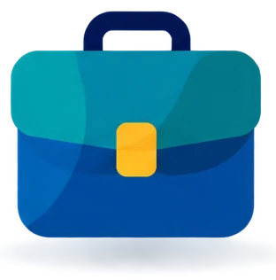
InfoJobs e Infoempleo.
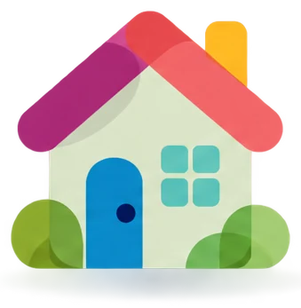
Idealista y Fotocasa.
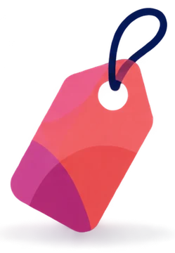
Wallapop y Milanuncios. Subastas: eBay.
Google Académico (scholar.google.es).
Google Maps.
También hay comparadores de seguros, luz o tarifas de móvil: Rastreator o los comparadores de la OCU. Lo contrario son los buscadores generalistas, que buscan de todo: Google, Bing o Yahoo!
1.1 · Práctica (no cuenta para el Comprueba)
1.1 · Navegación y búsqueda
Los periódicos, las radios y las televisiones tienen web. Publican noticias al momento, con vídeos y enlaces a otras noticias.
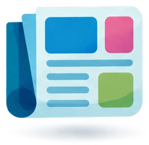
news.google.com reúne en una página noticias de muchos medios.
1.1 · Navegación y búsqueda
Cada resultado muestra el medio, el titular, un resumen y cuándo se publicó: «Hace 5 horas».
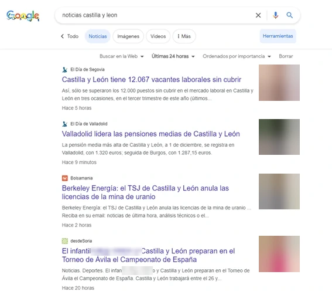
1.1 · Navegación y búsqueda
Wikipedia es una enciclopedia gratuita, libre y colaborativa. La escriben voluntarios y cualquier persona puede editar sus artículos.
La gestiona la Fundación Wikimedia, una organización sin ánimo de lucro. En español: es.wikipedia.org. Para buscar, escribe en la caja de búsqueda y elige el artículo.
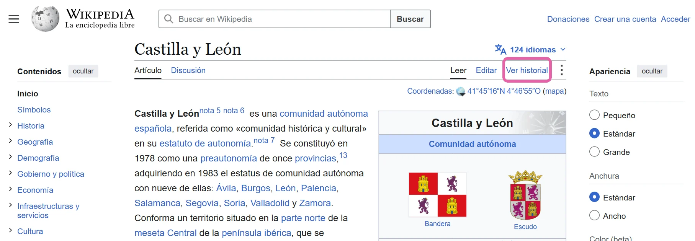
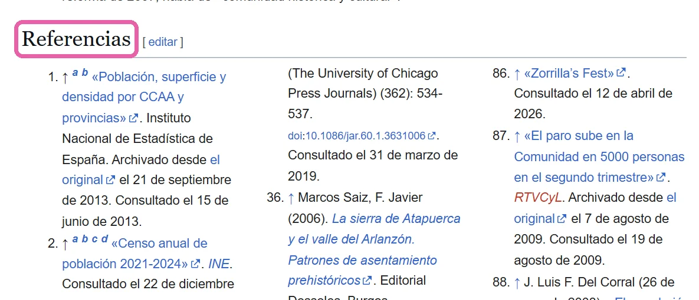
1.1 · Navegación y búsqueda
El examen dice DRAE: Diccionario de la Real Academia Española. Hoy se llama DLE, Diccionario de la lengua española. Es gratis en Internet.
1.1 · Navegación y búsqueda
Los significados de una palabra van numerados. Cada uno se llama acepción. Las abreviaturas dicen qué tipo de palabra es:
| Abreviatura | Significa |
|---|---|
| m. | masculino |
| f. | femenino |
| adj. | adjetivo |
| coloq. | coloquial |
Ejemplo: bulo → «1. m. Noticia falsa propalada con algún fin». Propalar es difundir.
1.1 · Así lo pregunta el examen · pregunta 1 de la demo
Imágenes de la pregunta 1 de la demo de tuCertiCyL (Junta de Castilla y León).
1.1 · Navegación y búsqueda
1.2
En el examen: 3 preguntas. En la demo: cuál es la fuente más fiable para un informe.
1.2 · Evaluación de la información
En Internet cualquier persona puede publicar: un blog, una red social, un foro, un comentario, un vídeo o un artículo de Wikipedia. Nadie revisa lo que dice antes de publicarlo.
En cambio:
1.2 · Evaluación de la información
C.R.A.P. son las iniciales en inglés de 4 preguntas que te haces ante una información.
| Letra | Pregúntate |
|---|---|
| C · Currency: actualidad El manual de CyL la llama «relevancia» | ¿De cuándo es? Mira la fecha. En salud o tecnología, la información vieja puede estar mal. |
| R · Reliability: fiabilidad | ¿Dice de dónde salen los datos? ¿Lo dicen también otras fuentes? ¿Está bien escrita? |
| A · Authority: autoridad | ¿Quién lo publica? ¿Es una persona experta o un organismo oficial? |
| P · Purpose: propósito | ¿Quiere informar, vender, convencer o entretener? ¿Hay anuncios? ¿Busca que te enfades o te asustes? |
1.2 · Evaluación de la información
1.2 · Evaluación de la información
Un bulo es una noticia falsa que alguien difunde a propósito. En inglés se dice fake news.
Te llega por WhatsApp, por correo o por redes sociales. Muchas veces te lo envían amigos o familiares que creen que es verdad.
Para qué se hace un bulo:
1.2 · Evaluación de la información
«Facebook cerrará las cuentas de usuarios con mala ortografía.»
Es falso. Busca asustarte para que lo compartas.
«WhatsApp será de pago si no reenvías este mensaje.»
Es falso. Solo quiere que lo reenvíes a mucha gente.
«Un supermercado regala un cupón de 500 € por su aniversario.»
Es falso. El enlace lleva a una web que pide tus datos.
1.2 · Evaluación de la información
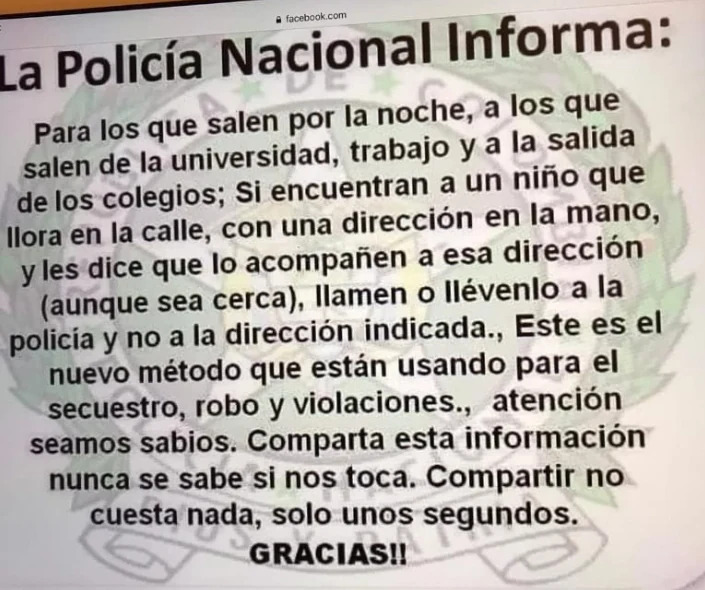
1 2 3 41.2 · Evaluación de la información
1.2 · Evaluación de la información
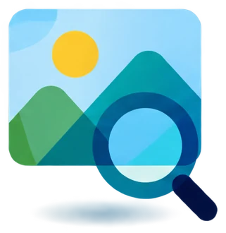
1.2 · Evaluación de la información
Patrocinado
Vuelo y hotel desde 199 €. Reserva hoy y paga después.
Patrocinado
Casas rurales y spa. Cancelación gratis.
Las ciudades, los pueblos y los parques naturales que no te puedes perder.
Al final de la página puede haber más anuncios. En las búsquedas de productos también salen productos patrocinados: fotos con precio.
Google puede juntar varios anuncios en un bloque, con un botón para ocultarlos.
1.2 · Evaluación de la información
Las empresas pagan a Google para salir arriba. Esto se llama SEM (marketing en buscadores, en inglés Search Engine Marketing).
Los ordena el algoritmo. Las webs se preparan para salir mejor colocadas. Esto se llama SEO (posicionamiento en buscadores, en inglés Search Engine Optimization).
1.2 · Evaluación de la información
La infoxicación es el exceso de información: recibes tanta que no puedes leerla ni comprobarla.
Consejo: sigue pocas fuentes fiables y elige un rato para informarte.
Un contenido viral es algo que se comparte muchísimo en poco tiempo: vídeos, memes o noticias. Una mentira se difunde más rápido que una verdad.
Consejo: antes de compartir algo viral, compruébalo.
El spam es la publicidad o los mensajes que recibes sin pedirlos, sobre todo por correo.
Consejo: márcalo como spam y no lo respondas. No publiques tu correo en webs ni foros.
1.2 · Así lo pregunta el examen · pregunta 2 de la demo
Pregunta 2 de la demo de tuCertiCyL (Junta de Castilla y León).
1.2 · Evaluación de la información
1.3
En el examen: 3 preguntas. En la demo: un reto con un archivo ZIP.
1.3 · Gestión de la información
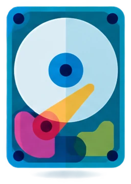
HDD o SSD. Guarda el sistema, los programas y tus archivos.
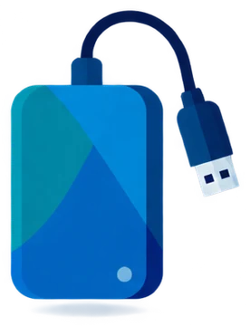
Se conecta por USB. De 1 o 2 TB. Sirve para las copias de seguridad.
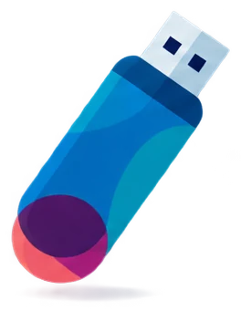
Para llevar archivos de un sitio a otro.
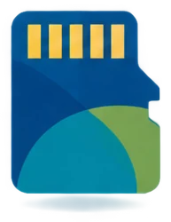
SD o microSD. En cámaras y móviles.
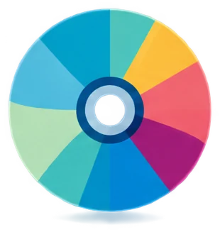
Discos ópticos. Hoy se usan poco.
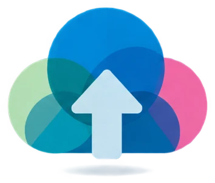
Entras desde cualquier sitio con Internet. Gratis: Google Drive 15 GB, OneDrive 5 GB, iCloud 5 GB y Dropbox 2 GB.
1.3 · Gestión de la información
En el Explorador de archivos (se abre con Windows+E):
| Qué quieres hacer | Cómo |
|---|---|
| Abrir | Doble clic |
| Copiar | Ctrl+C |
| Cortar | Ctrl+X |
| Pegar | Ctrl+V |
| Deshacer | Ctrl+Z |
| Cambiar el nombre | F2 |
| Eliminar | Supr |
Dentro del mismo disco, el archivo se mueve.
A otro disco o a un USB, se copia.
En Windows 11, Copiar, Cortar y Cambiar nombre son iconos arriba del menú.
En Windows 10 (las pantallas del examen) son texto.
1.3 · Gestión de la información
Una copia de seguridad (backup) es una copia de tus archivos en otro sitio. Sirve para recuperarlos si pierdes los originales.
Te protege si:
Dónde: en un disco externo, un USB o la nube. Cuándo: a menudo y, mejor, de forma automática.
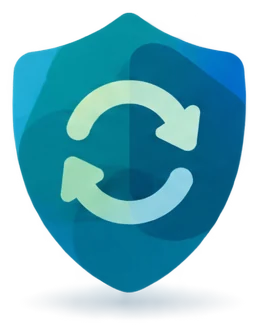
1.3 · Gestión de la información
El original y 2 copias.
Por ejemplo, un disco externo y la nube.
La nube cuenta como fuera de casa.
1.3 · Gestión de la información
| Dónde | Cómo se hace |
|---|---|
| Windows 11 | Aplicación Copia de seguridad de Windows: guarda tus carpetas en OneDrive. Historial de archivos, en un disco externo: Panel de control › Sistema y seguridad › Historial de archivos. |
| Android | Ajustes › Google › Copia de seguridad (el camino cambia según la marca). Se guarda en Google Drive. |
| Fotos | Google Fotos con la Copia de seguridad activada. |
| Ajustes › Chats › Copia de seguridad. | |
| iPhone | Ajustes › tu nombre › iCloud › Copia en iCloud. |
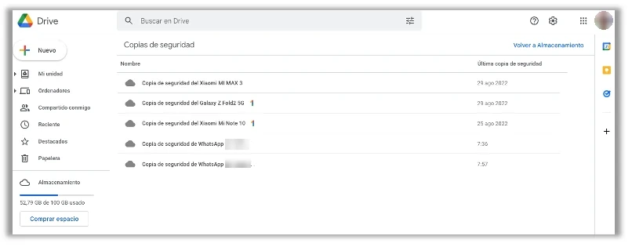
1.3 · Gestión de la información
Los favoritos o marcadores son accesos guardados a páginas web. Sirven para volver a ellas con un clic. Chrome y Firefox dicen marcadores; Edge dice favoritos.
PASOS EN CHROME
| Lunes a viernes | 9:00 a 14:00 y 16:30 a 20:30 |
| Sábados | 10:00 a 13:30 |
1.3 · Gestión de la información
En Chrome: menú ⋮ › Marcadores y listas.
Está debajo de la barra de direcciones. Se muestra u oculta con Ctrl+Mayús+B.
La misma estrella y Ctrl+D. El panel de favoritos se abre con Ctrl+Mayús+O.
1.3 · Gestión de la información
El historial es la lista de páginas que has visitado, con la fecha y la hora.
Las pestañas Lista y Por grupo ordenan el historial de dos formas. «Por grupo» antes se llamaba «Recorridos». En Edge y Firefox también es Ctrl+H.
1.3 · Gestión de la información
La navegación privada no guarda el historial ni las cookies cuando cierras la ventana.
| Navegador | Se llama | Atajo |
|---|---|---|
| Chrome | Ventana de incógnito | Ctrl+Mayús+N |
| Edge | Ventana InPrivate | Ctrl+Mayús+N |
| Firefox | Ventana privada | Ctrl+Mayús+P |
| Safari | Navegación privada | Cmd+Mayús+N (en el Mac) |
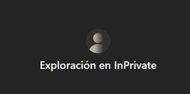
1.3 · Práctica (no cuenta para el Comprueba)
1.3 · Gestión de la información
Descarga el horario en PDF: horario-biblioteca.pdf
Historial de descargas completo
1.3 · Gestión de la información
Se guardan en la carpeta Descargas: C:\Usuarios\tu_nombre\Descargas. En algunas ventanas la ruta sale en inglés: C:\Users\tu_nombre\Downloads.
1.3 · Gestión de la información
Un archivo ZIP es un archivo comprimido: junta varios archivos y carpetas en uno solo y ocupa menos. Termina en .zip y su icono es una carpeta con cremallera.
PASOS EN WINDOWS 11
Aparece una carpeta normal con el mismo nombre.
1.3 · Gestión de la información
Usa la caja de búsqueda del Explorador de archivos, arriba a la derecha. Busca en la carpeta abierta y en sus subcarpetas.
En la caja de búsqueda, escribe contenido: y la palabra, sin espacios. Por ejemplo, contenido:melosa.
1.3 · Gestión de la información
En el móvil: mantén pulsada la imagen › Descargar imagen.
Copiar imagen sirve para pegarla en un documento sin guardarla.
Las murallas y los castillos son lo más visitado.
1.3 · Gestión de la información
1.3 · Gestión de la información
| Móvil | Dónde ves las fotos |
|---|---|
| Android | App Google Fotos o Galería (Samsung, Xiaomi) |
| iPhone | App Fotos |
Las fotos y los vídeos de la cámara se guardan en la carpeta DCIM. En Android, dentro de DCIM › Camera. En iPhone, dentro de carpetas como DCIM › 100APPLE.
Activa la copia de seguridad de Google Fotos o de Fotos de iCloud. Después entra desde el ordenador en photos.google.com o en icloud.com.
En Windows 11 también puedes usar la aplicación Vínculo móvil.
1.3 · Gestión de la información
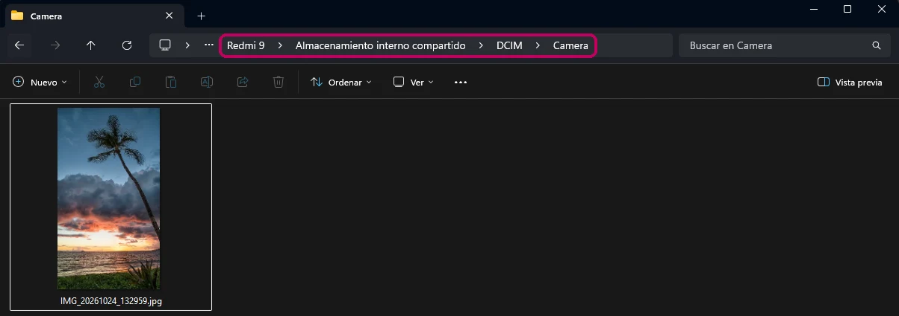
1.3 · Así lo pregunta el examen · pregunta 3 de la demo
Archivo y enunciado de la pregunta 3 de la demo de tuCertiCyL (Junta de Castilla y León).
1.3 · Así lo pregunta el examen · pregunta 3 de la demo
contenido:melosa en la caja de búsqueda del Explorador. O abre los documentos y usa Buscar (en Word en español, Ctrl+B).1.3 · Gestión de la información
Repaso del área 1
Repaso del área 1 · preguntas del curso «Soy competente digital», CyL Digital
Repaso del área 1
Fin del tema 1
Navegación, búsqueda y filtrado de información
Evaluación de la información
Gestión de la información
Si te falta alguna competencia, vuelve a su Comprueba y repítelo hasta acertar las 3 preguntas.
Basado en el curso «Soy competente digital», de CyL Digital (Junta de Castilla y León), CC BY-NC. Preguntas 1 a 3 de la demo de tuCertiCyL. Logos de Google, Bing, DuckDuckGo y Safari: Wikimedia; marcas de sus propietarios, con fines educativos. Curso: CC BY-NC-SA 4.0.